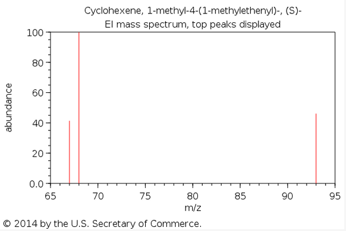

The DNA sequence of l-limonene synthase gene is from NCBI (GenBank: L13459). A constitutive promoter(BBa_J23100) and a RBS(BBa_B0032) are added upstream the functional gene to produce this synthase. In order to change the promoter and RBS to control the expression of the synthase, a XhoI restriction site is added between RBS and the start codon. l-limonene synthase-pSB1C3 plasmid is transformed into E. coli strain BL21 (DE3) to express the protein. l-limonene synthase can catalyst the expression of l-limonene.
In Fig. 2， l-limonene synthase gene connected with the backbone plasmid-PSB1C3 was digested by Pst I and EcoR I. The length of target band which contains this part is 1735bp, and the length of the backbone is 2624bp. The target genes are marked with arrows, and the figure shows that we transferred the limonene synthase gene into E.coli BL21 (DE3) successfully. In Fig. 3, the target proteins (89 kDa) are marked with arrows, and the figure shows that we expressed l-imonene synthase successfully.
Fig.2 The agarose gel electrophoresis of l-limonene synthase.
Lane M, DNA marker DL2000; Lane 1 and 2, l-limonene synthase gene digested by EcoRI and PstI.
Fig. 3 SDS-PAGE of l-limonene synthase, the two bands l-1&l-2 represent the expression of l-limonene synthase.
| Molecular Weight | 136.23404 g/mol |
| Molecular Formula | C10H16 |
| XLogP3 | 3.4 |
| Hydrogen Bond Donor Count | 0 |
| Hydrogen Bond Acceptor Count | 0 |
| Rotatable Bond Count | 1 |
| Exact Mass | 136.125201 g/mol |
| Monoisotopic Mass | 136.125201 g/mol |
| Topological Polar Surface Area | 0 A^2 |
| Heavy Atom Count | 10 |
| Formal Charge | 0 |
| Complexity | 163 |
| Isotope Atom Count | 0 |
| Defined Atom Stereocenter Count | 1 |
| Undefined Atom Stereocenter Count | 0 |
| Defined Bond Stereocenter Count | 0 |
| Undefined Bond Stereocenter Count | 0 |
| Covalently-Bonded Unit Count | 1 |
from PubChem
liquid
from EPA Chemical Data Report
176 °C (349 °F; 449 K)
from Wikipedia
50 °C (122 °F; 323 K)
from Wikipedia
Soluble in alcohol, ether, fixed oils, propylene glycol; insoluble in glycerin.
Solubility in water, insoluble
from Wikipedia
0.8411 g/cm3
from Wikipedia
| NIST Number | 34871 |
| Library | Main library |
| Total Peaks | 101 |
| m/z Top Peak | 68 |
| m/z 2nd Highest | 93 |
| m/z 3rd Highest | 67 |
Thumbnail

from NIST